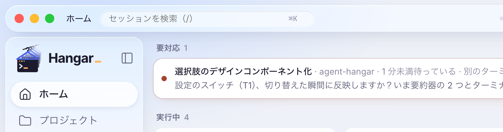
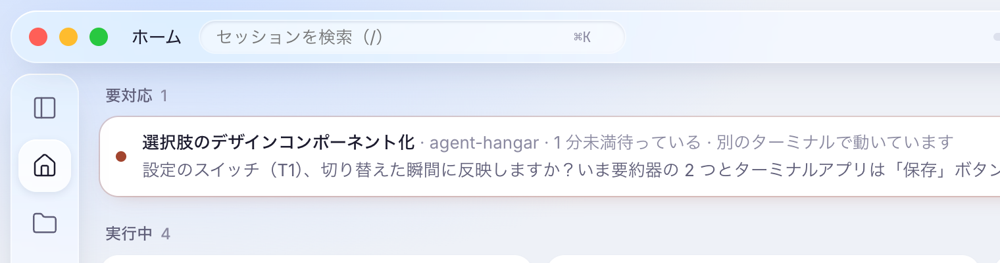
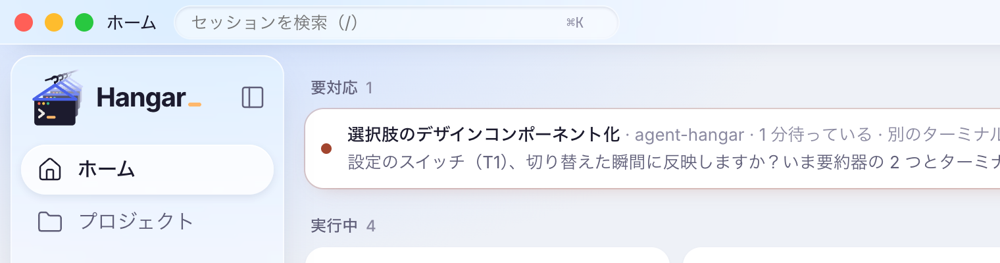
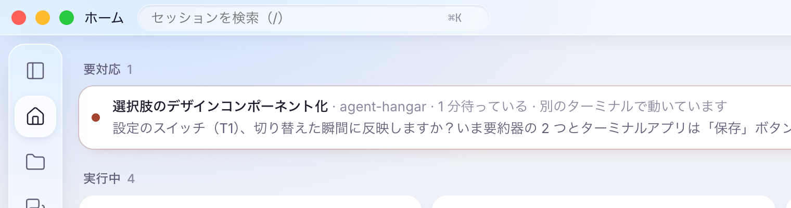
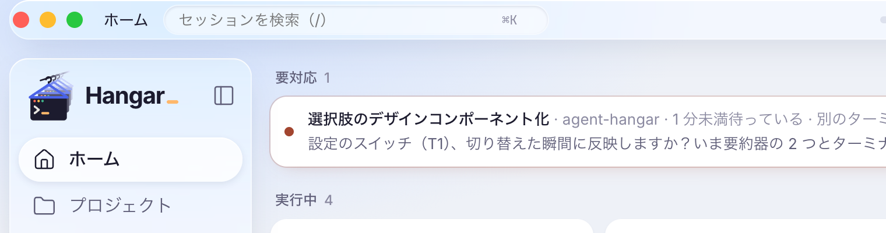
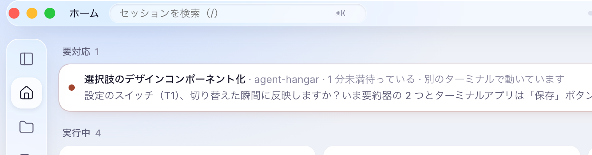
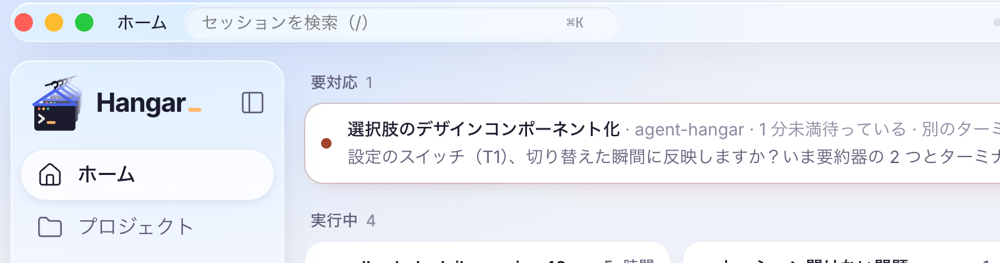
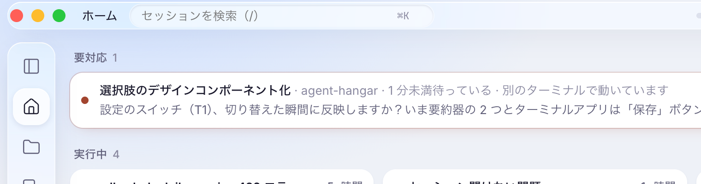
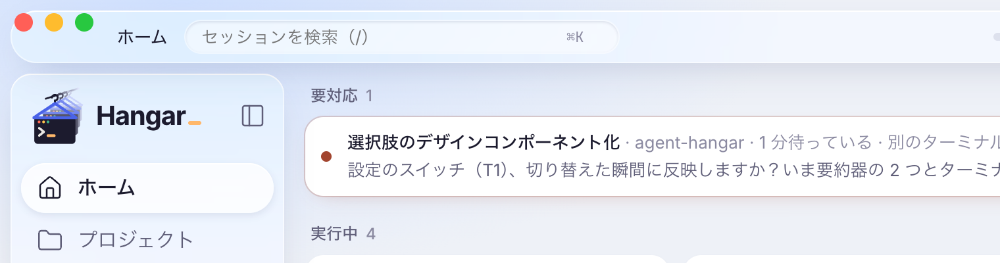
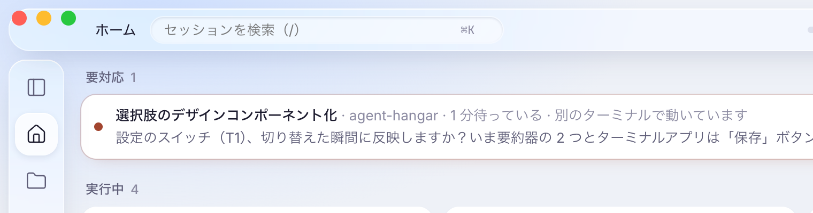

実際の画面に当てて撮った窓の左上です（3 点は見本として描き足しています）。
3 点は左 22pt・中心 28pt。浮いたヘッダ（高さ 40、上の隙間 8）の中心に揃えている。比較用。


3 点を VS Code と同じ位置（左 11pt・中心 17pt）に置き、ヘッダを窓の上辺と左右の端に付けた高さ 34 の帯にする。VS Code のタイトルバーと同じ構図。3 点は帯の中心に揃う。浮いたガラスの錠剤ではなくなり、サイドバーだけが浮く。


高さ 34 の錠剤を窓の上端に付ける。中心は 17pt で揃うが、錠剤の左端（窓から 8pt）の丸みに 3 点の左端がかかる。


高さ 30 の錠剤を上から 2pt の所に浮かせる。中心は 17pt で揃うが、A と同じく丸みに 3 点がかかり、中の部品（28pt）との上下の余白がほぼ無い。


3 点だけ VS Code の位置へ。ヘッダの中心（28pt）とずれ、3 点が錠剤の上の縁にかかる。

